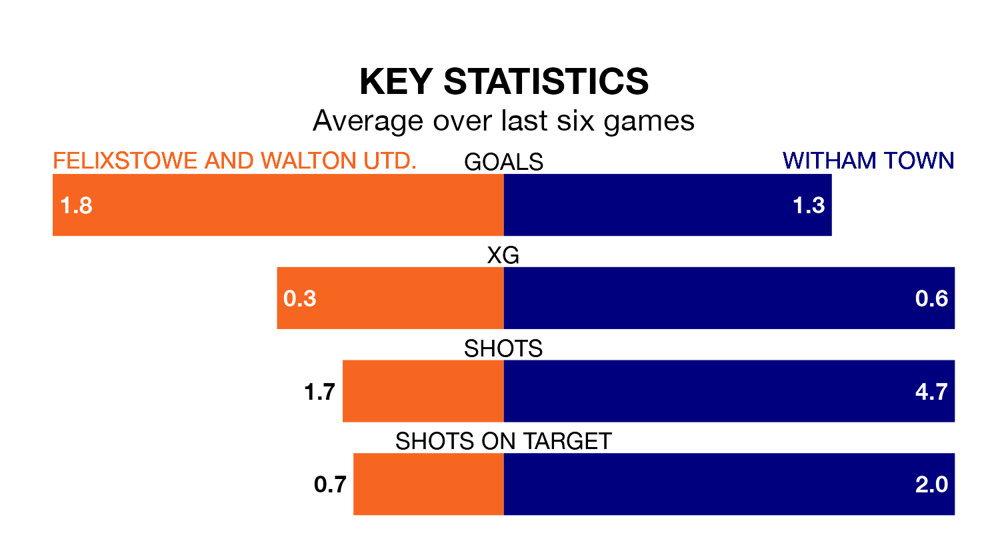

Felixstowe and Walton Utd. are on an excellent run ahead of hosting Witham Town on Saturday, with 16 points collected from their last six games.
Felixstowe & Walton Utd. have picked up five wins and one draw in their last six Isthmian League Division One – North games, and face a Witham side whose last six games have brought two wins and four losses.
With 56 goals in 24 games so far this season, Felixstowe & Walton Utd. are the league's third-highest scorers with 2.3 goals per game. And they are conceding fewer than average, letting in 28 goals at a rate of 1.2 per game.
Witham, meanwhile, are below average scorers, with 1.3 goals per game, compared to a league average of 1.7. They have conceded 1.9 goals per game.
The home team are second in the table after 24 games, of which they have won 15 and drawn five, earning 50 points.
Town are 12 places behind Felixstowe & Walton Utd. in 14th, with six wins and six draws putting them on 24 points.
In the last five years, Felixstowe & Walton Utd. and Witham have played each other on five occasions. Felixstowe & Walton Utd. won three of them, Witham one, and they drew once.
On average, Felixstowe & Walton Utd. scored 2.0 goals and Witham 1.0 in those matches.
Their last meeting was on November 25, when Witham won 3-2 at home.
Felixstowe & Walton Utd.'s last match was on February 13, a 2-0 win against Brightlingsea Regent.
Witham lost 4-0 against Basildon United last time out, on February 3.
Updated: 10:01 (UTC), 12/04/24